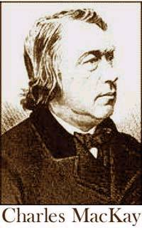

El mismo viejo truco
El libro Extraordinary Popular Delusions & the Madness of Crowds (Ilusiones populares extraordinarias y la locura de las multitudes) fue escrito en 1841 por el autor, editor y músico escocés Charles MacKay (1814-1889) y desde entonces se ha reeditado varias veces —con leves cambios de título y adiciones varias—. Es una obra notable que trata de las debilidades del público y los desastres acarreados por la falta general de conocimiento acerca de cómo funciona el mundo. Siempre escéptico e incrédulo, MacKay se refirió a los a los practicantes del “magnetismo animal” —una difundida noción de curandería de la época— y concluyó que su idea de un “fluido magnético” que supuestamente fluía a través de los humanos era una tontería:
Y aquí debe señalarse que los magnetizadores no arguyenque su fluido tenga validez universal; los fuertes y lossaludables no pueden ser magnetizados; los incrédulos nopueden ser magnetizados; quienes razonan sobre el asuntono pueden ser magnetizados; quienes creen en él firmementepueden ser magnetizados; los débiles de cuerpo pueden sermagnetizados, y los débiles de mente pueden sermagnetizados. Y en previsión de que, por una u otra causa, los individuos de estas últimas clases se resistan alencanto magnético, los apóstoles de la ciencia declaranque hay ocasiones en que ni siquiera ellos pueden serafectados; la presencia de un burlón o un incrédulo puededebilitar la potencia del fluido y destruir su eficacia.En sus instrucciones para magnetizadores, M. Deleuze diceexpresamente: “¡Nunca magnetice ante personasinquisitivas!”. ¡Y aún así, los seguidores de esta ilusiónreclaman para ella la categoría de ciencia!
¿Suena familiar? La misma clase de coartadas que se usan aún hoy. El M. Deleuze al que se refiere había publicado lo siguiente en sus instrucciones para aspirantes a curanderos, Histoire Critique du Magnetisme Animal, en 1813:
1. Olvide por un tiempo todos sus conocimientos de física y metafísica. 2. Elimine de su mente todas las objeciones que se le puedan ocurrir. 3. Imagine que tiene el poder de tomar el padecimiento en sus manos y arrojarlo a un lado. 4. No razone durante seis semanas luego de haber comenzado el estudio. 5. Tenga un deseo activo de hacer el bien, una firme creencia en el poder del magnetismo, y una entera confianza en su utilización. En breve, espante todas las dudas; desee el éxito, y actúe de manera simple y atenta. 6. Aleje del paciente todas las personas que puedan serle problemáticas.
Y: ¡Nunca magnetice ante personas inquisitivas!
Esto nos da una idea bastante buena de cómo funcionaba este embuste, ¡directo de las bocas de quienes lo originaron! Por supuesto, no podemos encontrar ningún indicio de que Deleuze fuera un fraude consciente. Los creyentes verdaderos suelen recurrir a estas racionalizaciones para sustentar sus creencias pese a los fracasos y las paradojas con que tropiezan constantemente. Todo puede encontrarse en: http://www.worldwideschool.org/library/books/relg/socialeccltheology/MemoirsofPopularDelusionsV3/chap47.html, cortesía del lector australiano Brian Miller, miembro de Australian Skeptics, y la World Wide School Library.
Astrología para niños
El lector Martin D. Brazeau, con el Museo Redpath, Universidad McGill, Montreal, Canadá, nos dirige a un sitio Web responsable con que se encontró, pero que a primera vista lo dejó consternado. Escribe:
Me alarmé mucho al darme cuenta de que sitio Web de la Canadian Broadcasting Corporation http://www.cbc.ca/ presentaba una sección para niños: “CBC Kids Scop’z. ¡No luches con el futuro! ¡Deja que nuestros horóscopos te muestren el camino!”. Puede ir directamente a la sección, animada en Flash, en http://www.cbc.ca/kids/scopz/. Sin embargo, lo visité para ver de qué se trataba. Para mi sorpresa, era un tratamiento bastante hilarante de los horóscopos.
Martin, sólo espero que los lectores descuidados y/o ingenuos se den cuenta de que es un chiste. ¡He visto horóscopos “reales” que no son muy distintos, ni menos absurdos…!
La fabulosa máquina curandera QXCI
Extractos de un mensaje enviado por el lector Alan Poulter:
Una de las cosas más valiosas que hacen ustedes [la JREF] es surtir a personas como yo con una fuente de información de la que citar hechos, estudios, etc., al confrontarse a personas sinceras que creen en cosas locas. La capacidad de citar con gentileza dónde se hacen los estudios y quién los hace, y qué nos dicen en realidad, es una gran arma para el arsenal de cualquier escéptico.
Un sitio extraordinario me llamó la atención. Se refiere a un aparato electrónico llamado “QXCI”, inventado por el “profesor” William S. Nelson (Bill), que, por lo que parece, puede curarlo todo. Vea http://www.qxsubspace.com/QXCI_eng/main.html. Es un sitio Web bien armado, pero el contenido ciertamente fuerza la imaginación. Lo triste es que, mientras leía todo esto, sentí que no me sorprendería que él creyera sinceramente todo lo que asegura que puede hacer su cachivache electrónico. Una alarma intelectual sonó con fuerza con respecto a estas palabras: “Mejor que dedicarse a negociar con las políticas estadounidenses y el FDA, Bill Nelson se trasladó a Budapest en 1993.”
Según el sitio Web, Bill evidentemente fue “reconocido como un genio desde temprana edad”. Dejaré que usted juzgue por sí mismo, pesando estos argumentos extraídos del sitio Web de Nelson con lo que sus lectores saben de física y la manera en que funciona el mundo. La escritura de estas citas es idéntica a la original 1 :
Durante su juventud su interés [de Nelson] en la física cuántica y la ingeniería electrónica le llevaron a trabajar para la ‘General Motors’ y su aportación al sistema de navegación ‘Gyro’ del proyecto espacial ‘Apolo’… Durante el desarrollo de su sistema, Bill Nelson ha integrado las ciencias de las matemáticas, la física cuántica, la electrónica, el naturismo, la homeopatía, la quiropráctica, la medicina energética y la programación informática. También ha incorporado su conocimiento sobre materias metafísicas para crear un programa único en su perspectiva de sinergia en la curación natural. Bill Nelson ha estudiado psicología, homeopatía, naturismo, ciencia, administración, informática y ley internacional. El QXCI incorpora muchas modalidades terapéuticas en su programación, a las cuales han contribuido y continúan contribuyendo muchos de los usuarios actuales del sistema. El conocimiento de Bill Nelson en los campos de la dinámica fractal, la teoría ‘subespacial’ y el sistema ‘trivector’ han hecho posible este sistema de ‘biofeedback’.
¿Alguien puede traducir esto, por favor? Conozco las palabras, pero no sé qué significan en este contexto. Y, a propósito, el corrector ortográfico se volvió loco con estas oraciones. Continuemos:
El paciente es conectado [al artefacto] a través de un electrodo en la cabeza y cuatro más, en los tobillos y las muñecas, a una pequeña caja digital conectada externamente a un ordenador a través del puerto paralelo de este. A la caja también se le conoce como la caja de interfase. Mediante una calibración automática del ordenador, los parámetros electricos del paciente son medidos. A esto le llamamos ‘El apretón de manos’ entre el ordenador y el paciente. Esto proporciona al QXCI una línea base desde la cual comenzar a testar.
De estos cálculos se pueden deducir otras ramificaciones varias. La bioresonancia del sistema puede ser medida. La reacción del cuerpo a nosodes, isodes, alersodes, sarcodes, homeopáticos clásicos, herbarios, minerales, aminoácidos, enzimas, hormonas, bacterias, hongos, parásitos, nervios, vertebras, músculos y miles de otros compuestos. La resonancia del sistema es medida determinando el potencial evocado o la reacción del cuerpo a estos compuestos.
El sistema QXCI también puede realizar terapias intrínsicas, tales como electroacupunctura, Rife (Mora + Bicom), bioresonancia, Scalar, terapia de color, NLP, etc. El eslabón cibernético de terapia y diagnóstico hace del QXCI el sistema más completo energético médico del futuro.
A continuación viene una advertencia:
Este nuevo y dramático salto en tecnología puede parecer amenazador para algunas personas. Puede ser como si una persona de hace cien años viera un ordenador o un televisor. Puede ser difícil de creer, pero déjenme asegurarles que esta nueva tecnología es real y está aquí para quedarse. Los competidores han cultivado muchos rumores y mentiras sobre el dispositivo, pero esperamos que los médicos y terapeutas inteligentes investiguen por sí mismos. El dispositivo QXCI no es un generador de números aleatorios.
Este sistema está calibrado para medir las más sutiles reacciones eléctricas y subespaciales a un grupo de sustancias biológicas y médicas. La sensibilidad es tan alta como para detectar los más tempranos signos de enfermedad y aflicción. Por lo tanto, los resultados pueden estar por debajo del reconocimiento del cliente. Las lecturas deben ser evaluadas por personal calificado. No se hacen afirmaciones sobre el sistema o los resultados.
La última oración dice todo.
Un pregón adicional es que tiene un “prayer wheel program” (programa rueda de rezos) que permite que su computadora rece por cosas variadas. Y viene con la satisfacción de aproximadamente 300 estudios relacionados con las Ruedas de Rezos, uno de los cuales “demostró una mejoría significante (Más del 10%) en aproximadamente 500 personas por las que se oró, en referencia con otras 500 por las que no se oró.” (???) Aquí están algunas de las afirmaciones extraordinarias hechas con respecto a esta ruedita:
El programa induce un campo de ‘indeterminancia’ en el ordenador, que es súper impuesto como una ‘Rueda de Rezo Tibetana’. Todas las energías de la matriz del QXCI están incluidas en el ‘24/7 Prayer Wheel Program’ (Eso es tranquilizador.) Este programa también contiene una serie de rasgos de realce, tales como las posibilidades incluir el ADN del paciente, su patrón de voz, su fotografía y su análisis bifacial. Los ‘12 Pasos’ en el programa equivale a las 12 dimensiones. Las ‘Energías Negativas’ pueden ser buscadas y corregidas manualmente, aunque el programa lo hace automáticamente cada determinado tiempo. Si el sistema encuentra tal energía muestra una alerta, si no se da una respuesta en un lapso de 15 minutos, este procede a corregirlas. Expertos en cada creencia fueron consultados para el desarrollo de este programa y ellos facilitaron oraciones de sus respectivas religiones.
El precio del programa es de 300 USD para propietarios del ‘QXCI’ y de 500 USD para no propietarios.

Alan, es evidente que el “Dr. William Nelson, MD, PhD” simplemente buscó todas las “palabras señuelo” técnicas y científicas que pudo y las unió en oraciones, sin ninguna preocupación por la coherencia o las acepciones. Un lector ingenuo puede creer fácilmente que esta clase de lenguaje es similar al que encontraría en cualquier artículo científico real —aunque usado de esa manera sí tendría sentido— y así parece algo aceptable. No me sorprendería en absoluto que este estafador obtuviera alguna clase de patente —que, por lo que sabemos, convence a muchos de que toda esta cháchara debe tener algún mérito— y así los induzca a invertir dinero en su artimaña. Siempre ha sido así.
Pregunta por esos títulos…
Más parálisis del sueño
La lectora Crystal Moore, de Carbondale, Illinois, continúa la discusión sobre la ASP:
Leí un poco sobre la parálisis del sueño en su último comentario, y tenía que escribirle. Mi novio padece esta condición, y cuando era adolescente atribuía sus experiencias a causas sobrenaturales; al punto que le había inventado a todo el asunto una explicación grandilocuente que ahora está demasiado avergonzado para compartir conmigo, aunque ha mascullado algo sobre fuerzas malignas que retroceden en el tiempo.
Al igual que Grant [página Web correspondiente al 21 de mayo], finalmente descubrió en Internet qué era lo que le sucedía. Aunque parezca increíble, nunca le dijo a nadie lo que le pasaba. Si no hubiera descubierto la causa online, me dan escalofríos de pensar dónde estaría hoy, o a qué creencias adheriría, especialmente teniendo en cuenta que el resto de su familia tiende a la locura religiosa. Ahora él, igual que yo, es ateo y escéptico, aunque temo que algún día volverá a caer en la fe, visto cuán triste parece hallar la idea de que no haya vida después de la muerte. A mí el concepto me alegra inmensamente.
Cuando supe de su condición, pensé inmediatamente en cuántas historias de fantasmas, abducciones OVNI y otros relatos paranormales comienzan con las palabras “desperté y…”. Después de todo, las experiencias que proporciona esta condición encajan perfectamente en la gama de relatos paranormales. Mi novio ha experimentado personas que conoce gritando de dolor y arañando la puerta de su habitación, además de ataques de fantasmas, voces malignas llamándolo desde otras habitaciones en una casa vacía… Estoy segura de que esas experiencias llevan a muchas personas a abrazar creencias irracionales, sin saber nunca la causa verdadera.
Yo misma me he interesado en esas historias desde que era muy joven, leyendo grandes libros de Time/Life llenos de ellas en la casa de mi abuela. Reconozco que en ese entonces era una creyente hecha y derecha, y me fui volviendo más escéptica con los años, pero siempre tuve un fuerte interés. El tema es atrayente como fuente de asombro, y puesto que mi familia no era religiosa, satisfizo esa necesidad infantil de un mundo oculto lleno de misterios y emociones.
Había empezado a adoptar la idea de que alguna clase de fenómeno, comúnmente subjetivo pero parcialmente objetivo, llevaba a los informes de todas las clases de fenómenos sobrenaturales, desde los OVNIS hasta las visiones religiosas, hadas, etcétera. No me daba cuenta de que los fenómenos son simplemente el resultado de una percepción humana errática. Cuanto más aprendo sobre la poca confiabilidad de la percepción y la memoria, más me sorprende que tantos acepten como verdad toda esa basura descabellada. Es muy fácil engañar al ojo y la mente, pero la mayoría de las personas piensan que la percepción es infalible.
Atribuyo a usted mi cambio de perspectiva. Más específicamente, a una copia de “Fraudes paranormales” que mi vendedor de libros usados había recibido, con toda la basura sobrenatural. Fue una lectura muy entretenida que me motivó a buscarlo online. Desde entonces, me vuelvo más escéptica cada día. He disfrutado particularmente la manera en que ha despedazado a John Edward y Sylvia Browne. Quisiera creer en una vida de recompensas después de la muerte, porque seguramente tendrían sus postres…
Creo que ya he divagado bastante. Gracias por todo lo que ha hecho para promover la causa de la racionalidad.
Crystal, mencionas “la poca confiabilidad de la percepción y la memoria”, pero a la mayoría de la gente le resulta muy difícil acepta que nuestros sentidos suelen ser en cierto modo poco confiables. Es verdad que la mayoría del tiempo lo que percibimos es correcto, o por lo menos suficientemente preciso para permitirnos actuar; es una necesidad básica de supervivencia. Con respecto a mi propia manera de manejar esto, en lugar de decir “el coche era rojo” o “había cuatro personas”, tiendo a decir “creo que el coche era rojo”, y “recuerdo que había cuatro personas”. Aunque estoy un poco mejor equipado que la mayoría para manejar los caprichos de la percepción sensorial, jamás confío en que ésta sea perfecta.
Un cambio de dirección
El lector Curt van den Heuvel ofrece estas observaciones adicionales sobre el mismo tema, que ha llamado mucho la atención:
En su comentario de 21 de mayo, un lector trajo a colación el tema de la parálisis del sueño. Creo que puedo aportar unos detalles interesantes sobre este fenómeno. Mi esposa padece este trastorno. Lo describe en términos que le resultarían muy familiares a todos los “abducidos por OVNIs”. Empieza con una sensación de parálisis completa. Aunque está totalmente consciente de su entorno, es por completo incapaz de moverse o emitir sonidos. A esto sigue una poderosa sensación de que hay una presencia malévola en la habitación, fuera de su campo visual. Ocasionalmente a este estado le siguen varias alucinaciones visuales y auditivas.

Randi comenta: Curt, los “abducidos por OVNIs” nunca aceptarán esto; su ilusión les resulta demasiado valiosa. Por más que este fenómeno explique muy apropiadamente sus experiencias, preferirán y favorecerán el enfoque OVNI porque les da status. No es simplemente un evento psicológico común. Incidentalmente, tu esposa describe experiencias hignagógicas o hipnopómpicas clásicas, comúnmente conocidas como “fenómeno vieja bruja”, en el que la víctima suele alucinar que un demonio de alguna clase está sentado sobre ella y le causa dificultades para respirar. Esto ha sido parte del folklore durante más de un siglo. Curt continúa:
Ahora viene lo interesante: cuando conocí a mi esposa, hace unos quince años, ambos éramos creyentes cristianos de la variedad fundamentalista. Ella contaba que muchas veces la presencia malévola se definía en una inconfundible figura demoníaca, que avanzaba hacia ella con (sin duda) extrema malicia. Contaba además que a veces podía deshacerse de la figura recitando el Padrenuestro.
Pasaron diez años. Con el tiempo, ambos fuimos perdiendo fe en la religión en general, y en la práctica nos volvimos ateos esclarecidos. Lo interesante es esto: aunque la frecuencia y el impacto emocional de sus sesiones de parálisis no menguaron, el contenido de sus alucinaciones cambió. Ya no se enfrentaba con demonios y males sobrenaturales, sino con visiones más mundanas (aunque no menos aterradoras). Cuenta que en una ocasión vio claramente a nuestro hijo, entonces de dos años, corriendo por la habitación con un gran cuchillo de cocina. Le gritó que se detuviera, pero fue en vano. Cuando despertó, encontró a Jared durmiendo en su cuna, sin ninguna señal de que hubiera estado vagando.
No soy un experto médico, pero mi investigación me ha llevado a las siguientes sospechas. La parálisis del sueño (como su corresponsal ha señalado) de alguna manera es causada por diferentes partes del cerebro que despiertan en distintos momentos. Al encontrarse con esta condición, las funciones cerebrales superiores inventan situaciones, intentando explicar la incapacidad de moverse. Por lo general, estas “explicaciones” toman la forma de los temores más profundos del paciente. Así, cuando mi esposa creía firmemente en lo sobrenatural, las alucinaciones consistían en figuras demoníacas malévolas. Cuando perdió la fe en lo sobrenatural, estos arquetipos ya no tuvieron el poder de causarle temor, y las alucinaciones fueron reemplazadas por un contenido distinto, en este caso, el miedo de una madre de que su hijo esté en peligro inminente de hacerse daño.
Randi de nuevo: Curt, se cree que la mayoría de los sueños se deben también a este proceso de invención de situaciones, y que los ruidos extraños y otras percepciones sensoriales periféricas se incorporan al sueño, de modo que no se necesita que haya una racionalización consciente de esta información —aunque la mente efectivamente la procesa para evaluar posible peligros—. Esto también sustenta el cambio de atribución —de religión a necesidades familiares— que atravesó tu esposa. Curt continúa:
Eventualmente visitó a un médico, el cual le contó que el fenómeno está muy difundido y es tema de abundante investigación médica, aunque aún no se lo entiende bien. También le mencionó otro hecho interesante: el paciente experimenta casi siempre una sensación de dilatación temporal. Aunque subjetivamente el episodio de parálisis puede parecer extenso, la investigación ha demostrado que la experiencia suele no durar más de treinta segundos o un minuto. También le dijo que la parálisis del sueño ocurre generalmente al dormirse o al despertar. En el caso de mi esposa, ella advirtió que sus sesiones ocurrían casi exclusivamente cuando volvía a dormirse luego de despertar a la mañana. Desde entonces, ha adoptado la costumbre de levantarse de la cama luego de despertar. Como resultado, los episodios han desaparecido casi por completo.
Aquí tenemos las dos experiencias que mencionaba más arriba: hipnagógica o hipnopómpica, quedarse dormido o despertar, respectivamente. Observen también que la mayoría de los sueños regulares se caracterizan por este proceso de “dilatación temporal”. Se sabe que incluso los sueños que parecen largos tienen lugar en alrededor de treinta segundos. ¡Encuentro muy interesantes estos paralelos!
Prueba positiva
“L.K.”, del Reino Unido, nos cuenta:
Tengo una amiga que cree en todo lo que sea “alternativo”. Actualmente, una hija suya sufre de TOC —Trastorno Obsesivo-Compulsivo—. La calidad de vida de la niña es afectada negativamente por los rituales de “toque” a los que se la somete continuamente. Eso estorba también el progreso de toda la familia. Luego de ver sitios Web y un libro que le di acerca de tratamientos convencionales para este trastorno, me dijo que no valía la pena probar la terapia recomendada porque las estadísticas indicaban una baja tasa de éxito. En lugar de eso, estaba intentando con “sanación a distancia”, meditación y “colorterapia”. No fue sino hasta que llegué a mi casa que se me ocurrió la impugnación “NO HAY estadísticas para estas terapias”. ¡Debo probar Ginkgo bilbo (como se diga) para mi memoria!
Luego contactó a la madre de otro niño con TOC, quien al principio le preguntó por el signo de su hija. Era Virgo, igual que el suyo. Ahora ella cree que esto prueba que los de Virgo tienen predisposición al TOC a causa de su perfeccionismo. ¡Qué conclusión impresionante, después de verificar un total de dos personas! Puede ver cómo los creyentes usan las estadísticas de cualquier modo que les resulte apropiado.
Ésta es otra muestra de la infelicidad y la desesperanza que las personas experimentan cuando tratan de obtener algo de la curandería sólo porque no están bien informadas. El siguiente punto es otro ejemplo…
Geller el sanador
Hace un año, en esta página, informé que una stripper del Reino Unido conocida sólo como “Jordan” había abordado a Natalie, la hija de Uri Geller, en la que fue orgullosamente anunciada como “la fiesta de 25 años de una modelo de glamour, con tema de Rufianes y Prostitutas”. Se llevó aparte a Natalie y le pidió que hablara con su papá para que curara la ceguera de Harvey, su bebé de un año. El niño nació ciego y los médicos dijeron que nunca podrá ver: le falta el nervio que envía el mensaje del ojo al cerebro. Parece que Jordan no se había enterado del historial de sanaciones de Uri. Bien, ahora ella asegura que el doblacucharas ha ayudado a curar la ceguera de su hijo, obrando milagros con sólo tocar la cabeza del niño.
“Uri dijo ‘déjame sentir su cabeza’, así que hice eso, y ahora Harvey puede ver mucho más a distancia… Yo no creo en estas cosas, pero juro que ahora puede ver mucho, teniendo en cuenta que se supone que es ciego”, le dijo a la prensa.
¿”Mucho más”? ¿”A distancia”? Creo que necesito declaraciones más claras antes de entrar en éxtasis por este milagro…
Dónde está esa condenada cámara
Un mago amigo, Chris, informa:
Un amigo mío estuvo hablando con Uri Geller hace alrededor de un mes. Me contó que vio un video en el que Geller fue sorprendido doblando una cuchara con sus manos, y cuando se le preguntó al respecto, su respuesta fue: “Estaba verificando. Si no puedo doblarla con mis manos, tampoco puedo doblarla con mi mente.”
Es un comentario genial…

Estoy de acuerdo, Chris, y puedo imaginarme al Maestro del Descaro diciendo eso con expresión perfectamente seria. Añado aquí un archivo de video que muestra al hombre haciendo lo que yo llamo un truco, pero que él describe como una genuina proeza psicoquinética: cambiar de hora un reloj. Advertencia: el archivo de video es de 2 MB y requiere `Apple Quicktime`_. El primer segmento, titulado “ANTES”, muestra al señor Geller tomando el reloj del anfitrión del programa —*con las dos manos, como si fuera muy pesado (?)—, manipulándolo de una manera muy interesante, y ofreciéndolo a cámara para un primer plano, de modo que pueda verse la hora en el cuadrante.
Pausa: debo decir que el estudio de RAI-TV donde se grabó el programa es muy particular en un aspecto: no hay cámaras visibles. Éstas están a gran distancia del plató, y usan lentes muy poderosos para tomar las imágenes. Tampoco hay luces “tally” visibles —los indicadores rojos que normalmente muestran qué cámara está captando la escena— de modo que el ejecutante no sabe a dónde mirar o a qué dirección presentar una acción. Parece que el señor Geller estaba en desventaja durante esta sesión, puesto que se lo ve mirando a su alrededor, tratando de presentar el mejor ángulo… para sus necesidades.
Pero eso nos permite ver claramente en el primer plano que de alguna manera la cuerda ha sido separada del cuerpo del reloj —¿tal vez por accidente?— como resultado de toda esa acción a dos manos. La hora en el cuadrante es 12:13.
A continuación, el reloj desaparece por completo de cámara durante un breve instante, luego hay un procedimiento de 52 segundos en el que Geller gesticula mágicamente sobre él, puesto con el cuadrante hacia abajo, mientras incita a los televidentes a cantar “¡muévete!” y asegura “¡Miren, no hay imanes, no estoy tocando la cuerda!”, y finalmente el desenlace en la escena rotulada “Y DESPUÉS”, en la que se ve que la cuerda está nuevamente en su sitio —de alguna manera— y ahora la hora indicada es 12:55.
Un milagro…
Vibraciones azules
El lector Karel de Pauw comenta:
No es común que los anuncios de productos “saludables” tropiecen y hagan afirmaciones comprobables. De modo que felicitaciones al “agua alpina desintoxicante natural para beber ” Blue Water de Liphook, Hampshire, Reino Unido. El agua “tiene tanta energía que literalmente puede energizar su cuerpo”. Una manera de demostrar esta capacidad única es la “prueba del limón”.
¿Y qué es eso? “Exprima un limón fresco y ponga el jugo en dos vasos. Coloque uno de los vasos junto a la botella de Blue Water. Mantenga el otro a una distancia de por lo menos un metro y medio. Espere cinco minutos. Pruebe primero el jugo “más cercano”. La mayoría de las personas notan un asombroso cambio causado por la energía natural de Blue Water. Ver para creer. Probar para saber.”
Si sólo nos permitieran modificar eso para que sea una prueba adecuada de doble ciego, estaríamos realmente impresionados.
Feng Shui científico en Gales
De un corresponsal anónimo de Gales:
Lo que sigue es un fragmento de un e-mail enviado al personal de la Universidad de Gales en Aberystwyth y es parte de un curso de desarrollo del personal. Algunos tipos de ciudad son útiles para mover los muebles en busca de un poco de iluminación espiritual, pero francamente los científicos no podemos afrontarlo. Sin embargo, he solicitado “Feng shui en el laboratorio” para nosotros, los técnicos de investigación, o posiblemente “cómo enriquecer sus poderes psíquicos” para poder comunicarnos con científicos muertos, o algunos de los vivos. Tengo miedo de que el chi dé en el ventilador.
Realizaremos una Conferencia Secretarial/Clerical el viernes 9 de julio (9:15 - 3:00) en Penbryn Hall, organizada en conjunto con Coleg Ceredigion. Habrá oradores invitados y sesiones sobre inteligencia emocional, organización oficinesca, comunicación y el uso del Feng Shui en la oficina.
Transpórtame en Seattle
El lector Dan Green:
En la madrugada del jueves, un meteorito iluminó gran parte del estado de Washington. Nuestro periódico local, The Seattle Times, incluyó en su cobertura una lista de citas de testigos oculares. Una persona suministró la siguiente respuesta bochornosa:
Iba camino a mi trabajo esta mañana a las 2:40 y vino a mí una luz amarilla, luego verdosa, luego blanca y luego azul pálido, como nunca antes había visto. Al principio pensé que estaba siendo transportada, pero los indicadores de mi coche no cambiaron, así que supe que no me estaban “llevando”. Me dio mucho miedo, ya que vivo en el campo y la luna desapareció de tan brillante que era la luz.
Sí, esta persona está tomando un evento que vio en una mala película (OVNIs que afectan los instrumentos de los cochess) y usándolo como guía para tratar con la realidad. Del lado positivo, trataré de interesar a los fabricantes de automóviles para que pongan en los nuevos modelos luces de advertencia contra abducciones extraterrestres. Podría haber mercado para esto.

Demasiado tarde, Dan. Ya solicité la patente…
Hace un siglo en espiritismo
David P. Abbot (1863-1934) fue un prolífico inventor de ilusiones para magos, un mago él mismo, y el autor de “Behind the Scenes With The médiums” (“Tras las escenas con los médiums”, 1907), una completa exposición de los métodos usados por los farsantes de la época. Aquí están los párrafos iniciales del libro, en los que puede verse que un siglo atrás la situación no era muy distinta de la actual.
Se debe probablemente al entrenamiendo científico de la presente época que hay entre nosotros quienes no pueden aceptar la promesa de inmortalidad sólo mediante la fe. Estas personas requieren algo así como una prueba positiva para cualquier creencia que consideren. Parecen advertir de manera inconsciente que son vasta mayoría las probabilidades de que cualquier proposición no demostrada sea falsa.
Tales personas parecen sentir que si una raza de seres pensantes evolucionara lentamente en un mundo volante, la mayoría de las ideas que se desarrollaran en sus mentes, si no fuesen verificadas, no se corresponderían con hechos objetivos; que sólo aquellas que pudieran ser demostradas de algún modo revestirían valor; que las probabilidades son enormemente contrarias a la posible verdad de ideas de cosas no demostradas y a su existencia en general; y que las mentes que pueden, en una era supersticiosa, concebir y creer en supersticiones tales como la brujería, la hechichería, etc., podrían también en esa misma era concebir y creer en otras supersticiones que no son justificadas por los hechos, aunque complazcan al individuo.
Tales personas tratarían de resolver el misterio de los misterios sólo por la fuerza del intelecto. Tales personas separarían los labios de la naturaleza y le robarían su secreto, pero esas personas no han hallado nunca una respuesta formulada en palabras de esperanza.
We ask, yet nothing seems to know; We cry in vain- There is no “master of the show,” Who will explain, Or from the future tear the mask, And yet we dream and yet we ask.
Is there beyond the silent night An endless day, Is death a door that leads to light? We cannot say. The tongueless secret locked in fate We do not know, we hope and wait.
[Preguntamos, pero nada parece saber; clamamos en vano; no hay “maestro de ceremonias” que nos explique, o al futuro arranque la máscara, y aun soñamos, y aun preguntamos.
¿Hay tras la noche silenciosa un día eterno, es la muerte una puerta hacia la luz? No lo sabemos. El secreto mudo encerrado en el destino no conocemos, sólo esperamos.]
La cita fue tomada de Declaración de los libres, de Robert Green Ingersoll (1833-1899), prominente agnóstico, leguleyo y orador norteamericano, pero no está así atribuida en el libro de Abbott. Abbott continúa:
Si un hombre muere, ¿volverá a vivir?” Esta pregunta de preguntas inquieta aún hoy al corazón humano con la misma fuerza que antaño. Muchas soluciones se han ofrecido a este problema, muchas veces esta pregunta ha sido respondida; y aún así, una y otra vez se repite en el corazón humano.
Si las estructuras que son nuestros cuerpos deben disolverse en la muerte, ¿se desvanece por completo el atributo interno de esas estructuras que es el espíritu? ¿Nada nos depara la muerte salvo el abismo insondable de negrura del cual emergimos al nacer? ¿Será nuestro eterno futuro igual a nuestro eterno pasado? ¿No es la vida más que una estancia temporal en una cumbre tocada por los dedos de la luz del día, mientras todo alrededor se abre un abismo infinito y sin fronteras de oscuridad impenetrable, de un lado del cual aparecimos y de cuyo otro lado nos precipitamos al encuentro de nuestro destino?
Sentimos con seguridad de que nuestras partes materiales y espirituales se componen de elementos eternos e indestructibles. Pero, ¿acaso ese algo distinto de esos elementos —eso que ellos hacen realidad, esa creación que aparece como resultado de su combinación en una forma especial, esa otra cosa que es nosotros mismos— se desvanece por completo con la disolución de los elementos que constituyen temporalmente nuestros cuerpos y nuestros espíritus?
Para mi sorpresa, aunque Abbott conocía muy bien todos los trucos usados por los médiums para fingir comunicarse con los muertos, y fue de hecho uno de los mayores expertos en el tema, en este libro no declara sus convicciones personales de si existe o no evidencia apropiada de la supervivencia después de la muerte. Parece haber tenido una debilidad de razonamiento en algunos aspectos relacionados con este campo. Como los lectores interesados eventualmente descubrirán, en el libro que Teller —de Penn & Teller— está trabajando, al menos un operador astuto logró confundirlo, y sostuvo una creencia en por lo menos la posibilidad de la telepatía y otros fenómenos dudosos.
Mantendré informados a los lectores del progreso del libro de Teller, el cual debe ser por cierto muy interesante.
En conclusión
Si aún no han ido a join-skeptics@lyrics.net para suscribirse gratuitamente a su revista on-line, ¿qué están esperando? Shermer tiene algo poderoso y valioso aquí, y el precio es justo. Gratis. Hagan click ahora.
También digno de su atención es http://www.sas.org/tcs, si no son ya visitantes regulares…
¡Vayan a nuestra página de links —http://www.randi.org/education/links.html— para ver otros lugares que deberían visitar…!
¡Error! La cita atribuida a Homero la semana pasada en realidad era de Horacio, como dan Milton me dice. Me encantan los dos, Homero y Horacio… Y gracias, Dan.
¡La próxima semana, otro fragmento de video del mismo programa de RAI TV, éste sobre el difícil arte de doblar llaves cuando no se sabe si se está en cámara…! ¡Y otro postulante confundido, más el único e incomparable Baba Rodante! ¡No se lo pierdan!

Notas
- 1
-
La mayoría de las traducciones de las citas fueron tomadas de la sección en español del sitio Web indicado (http://www.qxsubspace.com/QXCI_esp/) (N. del T.)
Comentarios
Comments powered by Disqus